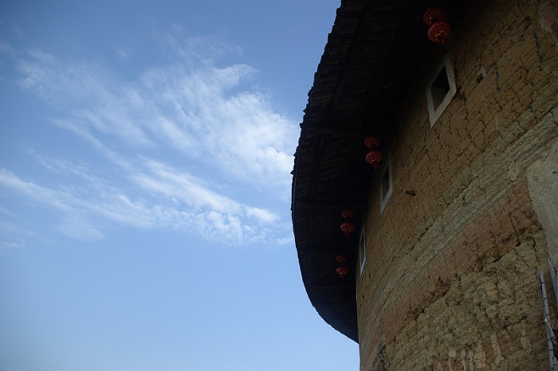

要去广州出差，提前安排了几天厦门行。对我而言，大部分的旅行，都是临时匆忙决定，对目的地也只是在网上简单看看，并不会刻意制定一些必去的景点计划，我喜欢这样自由散漫的行程。之前在杂志、网上看到过太多关于厦门的介绍，写他慢节奏的城市生活，写美丽的小岛鼓浪屿，写忘了时间的Air夫妇和Babycat馅饼男孩……
一度让厦门成为我向往的城市。真的来到这里，其实也不过如此，先后去了鼓浪屿、南普陀、厦大、湖里炮台后感觉再没什么地方好去（这些地方的照片后面再发）。赶紧到网上查查看附近还有哪里，这才知道原来著名的福建客家土楼景区，离厦门并不远。土楼在小时候收集邮票的记忆中是很清晰的，记得那时有一套中国民居的邮票，印象最深的就是土楼的那张，这看上去圆圆的像城堡一样的大房子，怎么会是民居，那样一幢得住多少人啊，里面的人又是怎么生活的呢？
只是后来似乎渐渐淡忘。既然交通还算方便，肯定就要去看看了。
福建土楼最有名的是永定的承启楼，就是邮票上的那个地方，比较集中的是南靖的土楼群。按网上查到的资料，离厦门最近的就是南靖。提前买好票，到厦门的第三天早上7：30坐上发往南靖的班车，两小时后到达。南靖县城看上去并不算小，街道很宽，车很少。比较罕见的是一个县城的客运站，居然只有一个售票窗口，看上去客流量并不大。再换乘前往书洋镇的小巴，离开南靖县城不久，马路边就已经可以看到零星的土楼雄姿。
|  |
一小时后到达书洋镇，这个镇很小，连客运站都没有，班车就停在马路边，售票员告诉我，返回时还在这个路边上车再买票就行。下车就有一群人围过来问要不要去土楼，可以坐摩托车，也可以包汽车。一个人当然是坐摩托车经济了，谈好价格出发，前往第一个景点——被称为“四菜一汤”的田螺坑。
离开书洋镇后，就一直是盘山公路，整整12公里，路面虽然修的很平整，车也很少，但急弯较多，摩托车速度比较快，有时还是很慌的。翻过这座大山不久，到达“四菜一汤”的观景台。
就是在半山腰建了一个小亭子，可以俯瞰整个“四菜一汤”土楼群，所谓的“四菜一汤”就是四个圆形土楼簇拥着一个方形土楼。整个土楼群在半山腰上，四面都是高山，周围片片梯田，视野开阔，感觉空气格外的清新。